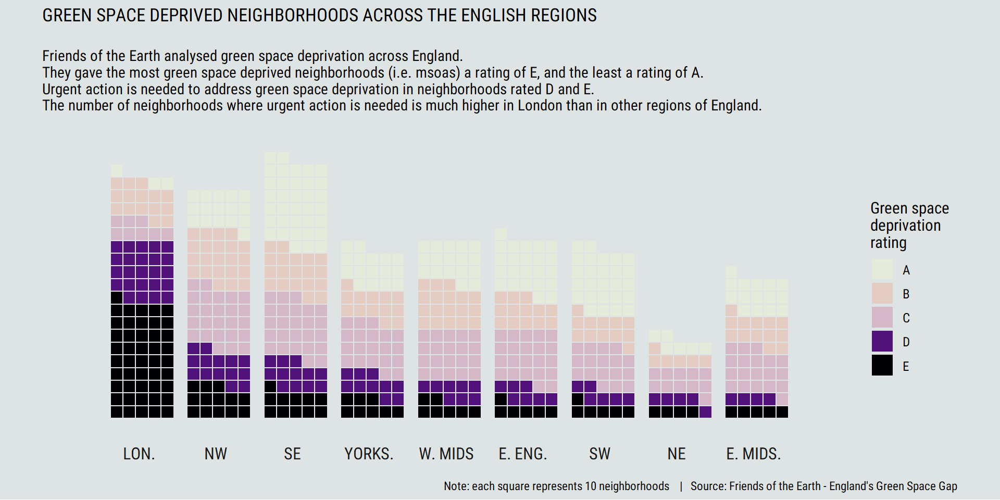

Chapter 5 Visualising green space deprivation across the English regions
In another notebook I conducted an exploratory analysis of green space deprivation data published by Friends of the Earth in the Autumn of 2020. Friends of Earth rated the extent of green space deprivation in each neighborhood (each middle-layer-super-output-area in language of UK administrative geography) in England. One of the interesting findings from this exploratory data analysis was that London has a much higher rate of neighborhoods experiencing the worst forms of green space deprivation than other English regions.
I wanted to explore ways to visually communicate this finding, looking beyond a geographic representation where it would have challenging to convey this finding due to differences in the density of regions across the UK. In the end I settled up the waffle chat below (basically a slight adaptation on the familiar bar chart). The design of the visualization was inspired by this #TidyTuesday post.
Reflecting on the process of producing the plot, I noted:
The difference font styles and colour palettes can make to the visual identity of a plot;
That perhaps the additional effort and time required to produce a waffle plot (verses a standard bar chart) would be difficult to justify in the future;
That I had learnt a considerable amount using the
themefunction fromggplot2to customize the visual design of a plot.
I hope these learnings will be useful in producing visualisations which convey the findings of the data science projects I am working on at the moment. I also thought it was important to avoid getting caught up in the visual design of plots being produced as part of statistical analyses. Given the small, technical audiences for the later, the default themes from ggplot2 are likely to be more than good enough.
In the code below, I read in, clean and reshape the data before producing the plot itself.
# import core libraries
library(tidyverse)
library(janitor) # for cleaning the variables names in the imported data
library(readxl) # for reading in data in an Excel format
# import libraries used for building the plot
library(waffle)
library(hrbrthemes)
library(patchwork)
library(ggtext)
library(viridisLite)
library(ggtext)
# import fonts to be used in the final figure
import_roboto_condensed()
#******************************************************************************
# READ IN AND CLEAN DATA
#******************************************************************************
#' reads in the Friends of the Earth Green Space Dataset
#'
#' @return: a tibble with consistently named variables
read_foe_data <- function(){
green_space <- read_excel("./data/(FOE) Green Space Consolidated Data - England - Version 2.1.xlsx",
sheet = "MSOAs V2.1") %>%
# inconsistent naming conventions for variables are used in the source data
# some needed to clean names for consistency (variables names are now )
clean_names()
return(green_space)
}
# read in FOE data
foe_green_space <- read_foe_data()
# focus on variables of interest for visualisation
foe_green_space_focus <- foe_green_space %>%
select(msoa_code, msoa_name, la_code, green_space_deprivation_rating)
# The FOE green space data doesn't include a variable for the region each
# MSOA/local authority lies within So, import a look up table from the ONS,
# which maps between Local Authority Districts and Regions
LAD_to_region <-
read_csv("./data/Local_Authority_District_to_Region__December_2019__Lookup_in_England.csv") %>%
select(-FID, -LAD19NM)
# merge the FOE green space and ONS region tibbles
green_space_regions <- foe_green_space_focus %>%
left_join(LAD_to_region, by = c("la_code" = "LAD19CD")) %>%
rename(region = RGN19NM,
region_code = RGN19CD)
#******************************************************************************
# RESHAPE DATA FOR PLOTTING
#******************************************************************************
#' adds a column of shorten region names which are easier read/use in plots
#'
#' @param df: a data frame including a region variable (with standard ONS region names)
#'
#' @return: an amended data frame with an additional column of short region names
add_region_short_names <- function(df){
res <- df %>%
mutate(region_short = case_when(
region == "East Midlands" ~ "E. Mids.",
region == "East of England" ~ "E. Eng.",
region == "North East" ~ "NE",
region == "North West" ~ "NW",
region == "South East" ~ "SE",
region == "South West" ~ "SW",
region == "West Midlands" ~ "W. Mids",
region == "Yorkshire and The Humber" ~ "Yorks.",
region == "London" ~ "Lon.",
TRUE ~ region),
region_short = str_to_upper(region_short)
)
return(res)
}
# process the FOE data for plotting including:
# counting the number of neighborhoods with each rating in each region
# and, adding in shorter easier to plot region names
region_ratings_counts <- green_space_regions %>%
filter(!is.na(region)) %>%
group_by(region, green_space_deprivation_rating) %>%
count() %>%
add_region_short_names()
# define an indicator variable identifying if urgent action is needed
# in a neighborhood to address green space deprivation
# (i.e. identify if each neighborhood is rated D or E)
# this indicator variables is used for ordering the regions in the plot
urgent_action_counts <- green_space_regions %>%
add_region_short_names() %>%
mutate(D_or_E = green_space_deprivation_rating %in% c("D", "E")) %>%
group_by(region_short) %>%
summarise(num_D_or_E = sum(D_or_E)) %>%
na.omit() %>%
arrange(desc(num_D_or_E))
# Take the counts of the numbers of neighborhoods in each region with each
# green space deprivation rating, and add in the urgent action counts for each
# region
region_ratings_counts <- region_ratings_counts %>%
left_join(urgent_action_counts) %>%
mutate(region_short = factor(region_short,
levels = pull(urgent_action_counts,
region_short)),
green_space_deprivation_rating = factor(green_space_deprivation_rating,
levels = c("E", "D", "C",
"B", "A"))) %>%
# needed to reorder ratings in each column
arrange(green_space_deprivation_rating)
#******************************************************************************
# PRODUCE THE PLOT
#******************************************************************************
# define the colour palette to be used in the plot
pal <- viridis(n = 5, alpha = 1, begin = 0, end = 1, direction = 1,option ="A")
bg_colour <- "#dee3e3"
# define the degree transparency used to de-emphasis neighborhoods where urgent
# action to address green space is not required
alpha_hr <- 0.25
# create the base of the plot
waf <- region_ratings_counts %>%
ggplot(aes(fill = green_space_deprivation_rating, values = n / 10)) +
expand_limits(x=c(0,0), y=c(0,0)) +
coord_equal() +
theme_ipsum_rc(grid="") +
theme_enhance_waffle() +
labs(fill = NULL, colour = NULL)
# add various layers to the base of the blot to produce the final figure
waf + geom_waffle(n_rows = 5, size = 0.5,
flip = TRUE,
colour = bg_colour) +
# de-emphasis neighborhoods where urgent action to address green space
# is not required
scale_fill_manual(values = c(pal[1], pal[2],
alpha(pal[3], alpha_hr),
alpha(pal[4], alpha_hr),
alpha(pal[5], alpha_hr))) +
# immitate a bar chart through facetting
facet_wrap(~region_short,
nrow = 1,
strip.position = "bottom") +
# format legend
labs(fill = "Green space\ndeprivation\nrating") +
guides(fill = guide_legend(reverse = TRUE)) +
# theme settings for plot area from example code
theme(panel.spacing.x = unit(0, "npc"),
strip.text.x = element_text(hjust = 0.5)) +
# custom theme settings for plot area
theme(plot.background = element_rect(fill = bg_colour, colour = NA),
text = element_text(family = "Roboto Condensed"),
legend.title = element_text(family = "Roboto Condensed"),
plot.margin = margin(b = 1, r = 25, l = 25),
) +
# add text areas to plot
plot_annotation(
title = str_to_upper("Green space deprived neighborhoods across the English regions"),
subtitle = "\nFriends of the Earth analysed green space deprivation across England.
They gave the most green space deprived neighborhoods (i.e. msoas) a rating of E, and the least a rating of A.
Urgent action is needed to address green space deprivation in neighborhoods rated D and E.
The number of neighborhoods where urgent action is needed is much higher in London than in other regions of England.
",
caption = "Note: each square represents 10 neighborhoods | Source: Friends of the Earth - England's Green Space Gap",
# custom theme settings for text areas
theme = theme(text = element_text(family = "Roboto Condensed"),
plot.background = element_rect(fill = bg_colour, colour = NA))
)
# option to save the final figure as a .png
visualisation_output = FALSE
if(visualisation_output) ggsave("num_neigh_gs_dep.png", width = 10, height = 5, units = "in")